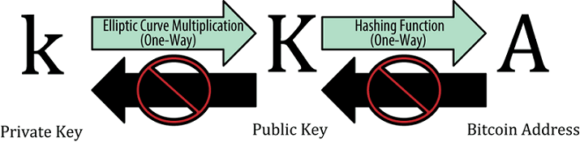
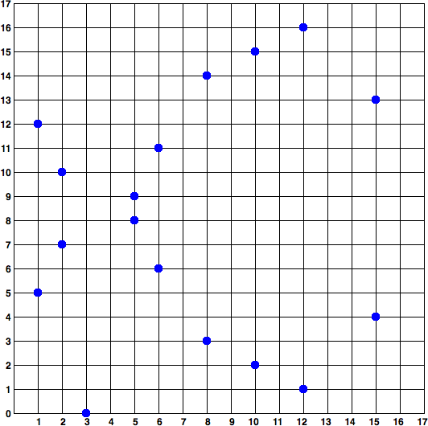
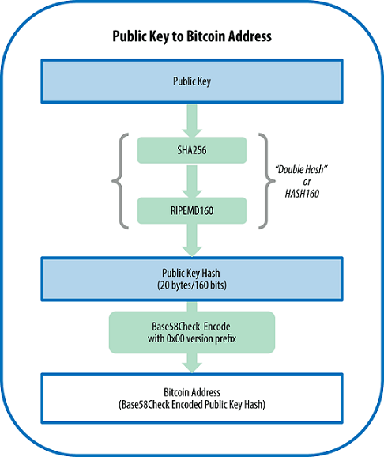
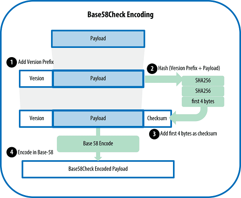
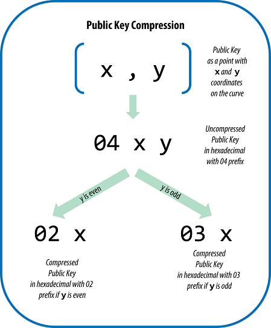

记录一下比特币密钥和地址的相关内容。
简介
比特币的所有权是通过数字密钥、比特币地址和数字签名来确定的。数字密钥实际上并不存储在网络中，而是由用户生成之后，存储在一个叫做钱包的文件或简单的数据库中。存储在用户钱包中的数字密钥完全独立于比特币协议，可由用户的钱包软件生成并管理，而无需参照区块链或访问网络。密钥实现了比特币的许多有趣特性，包括去中心化信任和控制、所有权认证和基于密码学证明的安全模型。
大多数比特币交易都需要一个有效的签名才会被存储在区块链。只有有效的密钥才能产生有效的数字签名，因此拥有~密钥副本就拥有了对该帐户的比特币的控制权。用于支出资金的数字签名也称为见证（witness），密码术中使用的术语。 比特币交易中的见证数据证明了所用资金的真正归谁所有。
公钥加密和加密货币
在比特币系统中，我们用公钥加密创建一个密钥对，用于控制比特币的获取。密钥对包括一个私钥，和由其衍生出的唯 一的公钥。公钥用于接收比特币，而私钥用于比特币支付时的交易签名。
支付比特币时，比特币的当前所有者需要在交易中提交其公钥和签名（每次交易的签名都不同，但均从同一个私钥生成）。比特币网络中的所有人都可以通过所提交的公钥和签名进行验证，并确认该交易是否有效，即确认支付者在该时刻对所交易的比特币拥有所有权。
私钥和公钥
私钥、公钥和比特币地址之间的关系如下图所示。

私钥
生成密钥的第一步也是最重要的一步，是要找到足够安全的熵源，即随机性来源。
更准确地说，私钥可以是1和n-1之间的任何数字，其中n是一个常数（，略小于），并被定义为由比特币所使用的椭圆曲线的阶。
公钥
通过椭圆曲线乘法可以从私钥计算得到公钥，这是不可逆转的过程：，其中 是私钥， 是被称为生成点的常数点，而 是所得公钥。其反向运算，被称为“寻找离散对数”——已知公钥 来求出私钥 ——是非常困难的，就像去试验所有可能的 值，即暴力搜索。
椭圆曲线密码学
比特币使用了secp256k1标准所定义的一种特殊的椭圆曲线和一系列数学常数。该标准由美国国家标准与技术研究院 （NIST）设立。secp256k1曲线由下述函数定义，该函数可产生一条椭圆曲线：
或
上述 （素数P取模）表明该曲线是在素数阶P的有限域内，也写作 ，其中， 这是个非常大的素数。作为一个例子，下图显示了在一个小了很多的素数阶17的有限域内的椭圆曲线，其形式为网格上的一系列散点。而secP256k1的比特币椭圆曲线可以被想象成一个极大的网格上一系列更为复杂的散点。

在椭圆曲线的数学原理中，有一个点被称为“无穷远点”，这大致对应于0在加法中的作用。计算机中，它有时表示为X = Y = 0（虽然这不满足椭圆曲线方程，但可作为特殊情况进行检验）。
还有一个“+”运算符，被称为“加法”，就像小学数学中的实数相加。给定椭圆曲线上的两个点和，则椭圆曲线上必定有第三点 。 几何图形中，该第三点可以在和之间画一条线来确定。这条直线恰好与椭圆曲线相交于另外一个地方。此点记为 。然后，在x轴做翻折获得 。
下面是几个可以解释“穷远点”之存在需要的特殊情况。
若和是同一点，和间的连线则为点的切线。曲线上有且只有一个新的点与该切线相交。该切线的斜率可用微积分求得。即使限制曲线点为两个整数坐标也可求得斜率！
在某些情况下（即，如果和具有相同的x值，但不同的y值），则切线会完全垂直，在这种情况下， = “无穷远点”。
若就是“无穷远点”，那么其和 。类似地，当是无穷远点，则。这就是把无穷远点类似于0的作用。 事实证明，在这里 + 运算符遵守结合律，这意味着。这就是说我们可以直接不加括号书写 A + B + C，而不至于混淆。 因此，我们已经定义了椭圆加法，我们可以对乘法用拓展加法的标准方法进行定义。给定椭圆曲线上的点P，如果k是整数，则 （k次）。注意，在这种情况下k有时被混淆而称为“指数”。
生成公钥
以一个随机生成的私钥为起点，我们将其与曲线上预定的生成点相乘以获得曲线上的另一点，也就是相应的公钥 。生成点是secp256k1标准的一部分，比特币密钥的生成点都是相同的：
其中是私钥，是生成点，在该曲线上所得的点是公钥。因为所有比特币用户的生成点是相同的，一个私钥乘以将 得到相同的公钥。和之间的关系是固定的，但只能单向运算，即从k得到。这就是可以把比特币地址（的衍生） 与任何人共享而不会泄露私钥（）的原因。
比特币地址
比特币地址可由公钥经过单向的加密哈希算法得到。哈希算法是一种单向函数，接收任意长度的输入产生指纹或哈希。加密哈希函数在比特币中被广泛使用，作为比特币地址、脚本地址以及在挖矿中的工作量证明算法。由公钥生成比特币地址时使用的算法是Secure Hash Algorithm (SHA)和the RACE Integ rity Primitives Evaluation Message Digest (RIPEMD)，具体地说是SHA256和RIPEMD160。
以公钥 为输入，计算其SHA256哈希值，并以此结果计算RIPEMD160 哈希值，得到一个长度为160位（20字节）的数字：
公式中，是公钥，是生成的比特币地址。
之后还要进行Base58check编码形成地址，流程图如下：

Base58和Base58check编码
Base58是Base64编码格式的子集，同样使用大小写字母和10个数字，但舍弃了一些容易错 读和在特定字体中容易混淆的字符。具体地，Base58不含Base64中的0（数字0）、O（大写字母o）、l（小写字母 L）、I（大写字母i），以及“+”和“/”两个字符。简而言之，Base58就是由不包括0，O，l，I的大小写字母和数字组成。
如下为Base58字母表：
123456789ABCDEFGHJKLMNPQRSTUVWXYZabcdefghijkmnopqrstuvwxyz
Base58Check是一种常用在比特币中的Base58编码格式，为了防止打印和转录错误，增加安全性，内置的检查错误的编码。检验和是添加到正在编码的数据末端的额外4个字节。校验和是从编码的数据的哈希值中得到的，所以可以用来检测并避免转录和输入中产生的错误。编码过程如下：

以下为Base58Check版本前缀和编码后的结果：
| Type | Version prefix(hex) | Base58 result prefix |
|---|---|---|
| Bitcoin Address | 0x00 | 1 |
| Pay-to-Script-Hash Address | 0x05 | 3 |
| Bitcoin Testnet Address | 0x6F | m or n |
| Private Key WIF | 0x80 | 5, K or L |
| BIP38 Encrypted Private Key | 0x0142 | 6P |
| BIP32 Extended Public Key | 0x0488B21E | xpub |
密钥格式
私钥格式
| Type | Prefix | Description |
|---|---|---|
| Hex | None | 64 hexadecimal digits |
| WIF | 5 | Base58Check encoding: Base-58 with version prefix of 128 and 32-bit checksum |
| WIF-compressed | K or L | As above, with added suffix 0x01 before encoding |
压缩格式私钥
“压缩格式私钥”是一个不当用词！私钥不是压缩的。WIF压缩格式的私钥只是用来表明他们只能被生成压缩的公钥和对应的比特币地址。相反地，“WIF压缩”编码的私钥还多出一个字节，因为这种私钥多了后缀“01”。该后缀是用来区分“非压缩格式”私钥和“压缩格式”私钥。具体格式见私钥格式一节。
公钥格式
公钥也可以用多种不同格式来表示，最重要的是它们分为非压缩格式或压缩格式公钥这两种形式。
我们从前文可知，公钥是在椭圆曲线上的一个点，由一对坐标（x，y）组成。公钥通常表示为前缀04紧接着两个256比特的数字。其中一个256比特数字是公钥的x坐标，另一个256比特数字是y坐标。前缀04表示其为非压缩格式公钥， 压缩格式公钥以02或者03开头。
例如：
1 | x = F028892BAD7ED57D2FB57BF33081D5CFCF6F9ED3D3D7F159C2E2FFF579DC341A |
公钥格式为：
1 | K=04F028892BAD7ED57D2FB57BF33081D5CFCF6F9ED3D3D7F159C2E2FFF579DC341A07CF33DA18BD734C600B96A72BBC4749D5141C90EC8AC328AE52DDFE2E505BDB |
压缩格式公钥
一个公钥是一个椭圆曲线上的点(x, y)。而椭圆曲线实际是一个数学方程，曲线上的点实际是该方程的一个解。因此，如果我们知道了公钥的x坐标，就可以通过解方程得到y坐标的值。这种方案可以让我们只存储公钥的x坐标，略去y坐标，从而公钥的大小和存储空间减少了256比特。每个交易所需要的字节数减少了近一半，随着时间推移，就大大节省了很多数据传输和存储。
未压缩格式公钥使用04作为前缀，而压缩格式公钥是以02或03作为前缀。因为椭圆曲 线加密的公式的左边是 ，也就是说y的解是来自于一个平方根，可能是正值也可能是负值。因此，为了区分y坐标的两种可能值，我们在生成压缩格式公钥时，如果y是偶数，则使用02作为前缀；如果y是奇数，则使用03作为前缀。这样就可以根据公钥中给定的x值，正确推导出对应的y坐标，从而将公钥解压缩为在椭圆曲线上的完整的点坐标。如下图所示：

Python实现密钥和比特币地址
私钥生成
- 不能使用普通的random库生成私钥，因为随机种子是可以得到的，就可以尝试暴力破解。
- 保证生成的地址几乎不可能重复
借鉴bitaddress.org生成私钥的工作原理，我们尝试实现它：
为了我们的目的，我们将构建一个更简单的bitaddress版本。首先，我们不会收集有关用户机器和位置的数据。其次，我们将仅通过文本输入熵，因为使用Python脚本持续接收鼠标位置非常具有挑战性（如果你想这样做，请检查PyAutoGUI）。
这将我们带到了我们的生成器库的正式规范。首先，它将使用加密RNG初始化一个字节数组，然后它将填充时间戳，最后它将填充用户创建的字符串。种子池填满后，库将让开发人员创建一个密钥。实际上，他们将能够创建任意数量的私钥，所有私钥都由收集的熵保护。
初始化池
这里我们从加密RNG和时间戳中放入一些字节。__seed_int和__seed_byte是两个将熵插入池数组的辅助方法。请注意，我们使用secrets。
1 | def __init_pool(self): |
输入种子
这里我们首先放置一个时间戳，然后输入字符串。
1 | def seed_input(self, str_input): |
生成私钥
其次，我们只确保我们的键在范围内（1，CURVE_ORDER）。这是所有ECDSA私钥的要求。CURVE_ORDER是secp256k1曲线的顺序，即：
1 | FFFFFFFFFFFFFFFFFFFFFFFFFFFFFFFEBAAEDCE6AF48A03BBFD25E8CD0364141 |
最后，为方便起见，我们转换为十六进制，并剥离’0x’部分。
1 | def generate_key(self): |
使用
1 | kg = KeyGenerator() |
公钥与比特币地址
椭圆方程一般方程形如：
比特币椭圆曲线中采用的参数如下，16进制表示，a=0，b= 7。
1 | _a = 0x0000000000000000000000000000000000000000000000000000000000000000 |
为比特币椭圆曲线上固定已知的一点，坐标如下：
1 | _Gx = 0x79be667ef9dcbbac55a06295ce870b07029bfcdb2dce28d959f2815b16f81798 |
为私钥，为公钥。
r是一个和_p有关的参数，私钥不能大于_r
1 | _p = 0xfffffffffffffffffffffffffffffffffffffffffffffffffffffffefffffc2f |
求逆元
1 | def Mod_inv(a, n=_p): |
椭圆曲线加法
公式如下：
1 | def E_add(p, q): |
椭圆曲线2P乘法
公式如下：
1 | def E_double(p): |
公钥计算
9G等于8G+G。现有一种更快捷算法：如计算9G，我们首先将9转化为二进制是’1001’，跳过第一位，从第二位开始，先直接对g倍乘，当该位为1时再进行一次加G，经过循环，最后得到9G。
定义Emultiply函数，输入为G点，和私钥(sk)，输出为公钥(kG点的坐标)
1 | def Emultiply(point, secret_key): |
压缩公钥
1 | def compressPub(point): |
生成地址
1 | import hashlib |
参考文献与代码下载
参考文献
- python实现私钥，公钥，签名，验签原理
- 如何用python生成自己的比特币私钥
- 第四章 密钥和地址
- “Mastering bitcoin: Programming the Open Blockchain” edtion 2
- 用python实现简版区块链-地址
- Elliptic curve point multiplication